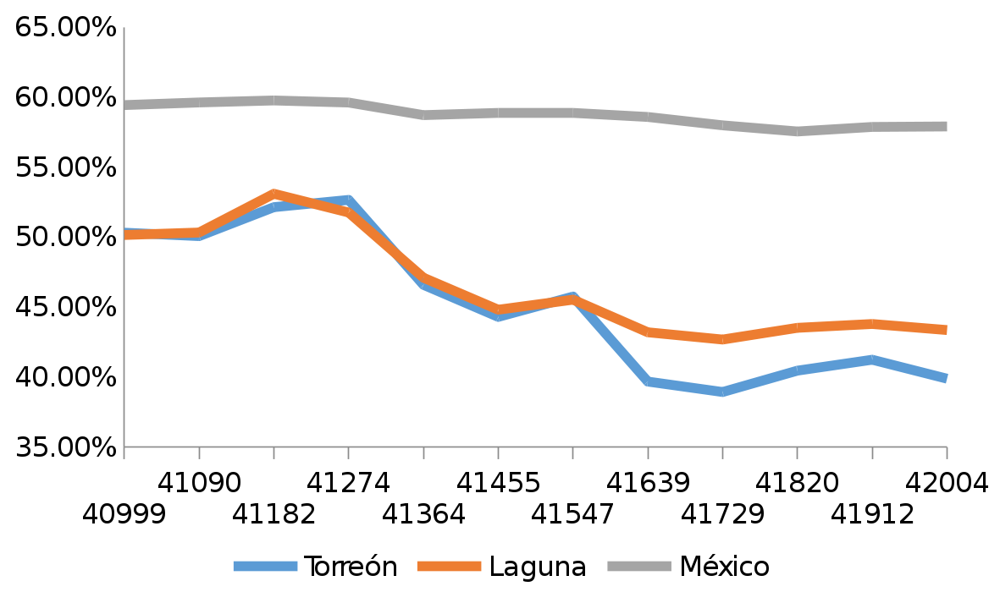

Debido a que la informalidad abarca todas las actividades económicas realizadas fuera del marco de la ley no existe una forma única de definirla. Por esta razón podemos dividirla bajo distintos criterios: la falta de registro de la empresa ante las autoridades, la condición del empleo y la producción o utilidad no declarada, entre otras. En México la forma más común de medir la informalidad laboral es usando la proporción de trabajadores registrados con prestaciones del sector salud respecto al total de las personas económicamente activas.
Cualquiera de estas clases de informalidad tiene repercusiones directas sobre la competitividad y el crecimiento económico. Es cierto que la informalidad ocupa a población desempleada en el sector formal y sus insumos e inversión apoyan a la economía, sin embargo es mayor el daño generado en el crecimiento a largo plazo. Algunos de sus efectos económicos más nocivos se listan a continuación:
Merma la productividad: la ineficiencia y la improductividad son características de la informalidad. Debido a que la informalidad carece de financiamientos e incentivos presentes en el sector formal, las empresas informales presentan una menor inversión de capital e innovación y generan menor valor agregado.
Afecta las estimaciones económicas: muchas transacciones de la economía informal son omitidas en las estadísticas económicas oficiales, lo que altera los resultados y estimaciones de crecimiento, actividad y producción económica.
Mayor carga tributaria al sector formal: a mayor tamaño del sector informal, se requerirá más gasto y aumentarán los impuestos para el sector formal.
Informalidad en Torreón y La Laguna
En el municipio de Torreón, Coahuila la tasa de informalidad laboral en el último trimestre de 2014 fue de 39.89% contra 43.37% de la zona metropolitana de La Laguna y 57.9% a nivel nacional.

El encontrarnos considerablemente por debajo de la media nacional sumado a la clara tendencia a la baja de la informalidad durante los últimos años no nos exenta de los efectos de ésta, por lo que se requieren políticas públicas para prevenirla y potenciar nuestra ventaja.
Acciones para prevenirla
La decisión de consumidores, trabajadores y empresarios de unirse a la informalidad se da tras poner en la balanza los costos y beneficios de ambos escenarios, por esta razón los esfuerzos de prevenir la informalidad tienen la intención de lograr que el valor neto de ser formal exceda el de ser informal.
Organismos nacionales e internacionales como el Centro de Investigación para el Desarrollo A.C. (CIDAC) recomienda, entre otras, las siguientes acciones:
- Establecer mejoras regulatorias que simplifiquen el proceso de registro e incentiven la formación de empresas.
- Mejorar la educación secundaria y superior para empatar la demanda y oferta de competencias laborales.
- Implementar empleos flexibles, por ejemplo el outsoursing y los trabajos de medio tiempo, para promover la introducción de trabajadores al sector formal.
Además de estas prácticas, la Organización para la Cooperación y el Desarrollo Económico (OCDE) da énfasis a incrementar la confianza de los ciudadanos en las autoridades a través de disminuir la corrupción, proteger los derechos de propiedad e implementar un sistema judicial imparcial.